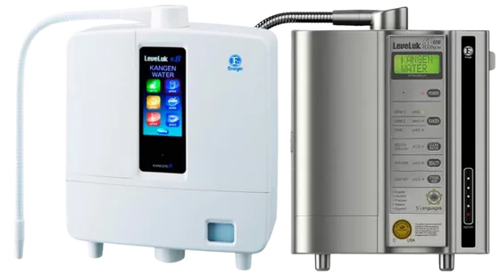
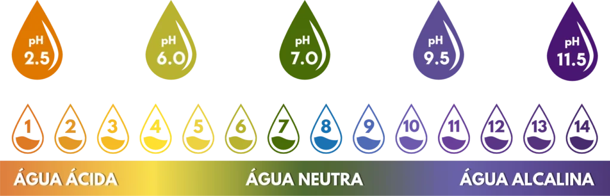
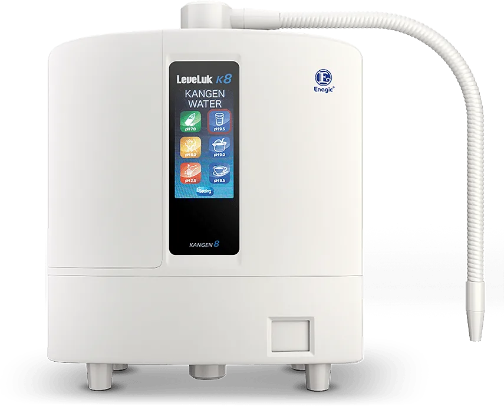

Filtragem
A água da torneira passa primeiro pelo filtro interno do equipamento.
Marília, Bauru e região · demonstração na sua casa
Levamos o ionizador Kangen até sua casa em Marília, Bauru e região, ligamos na sua torneira e você prova a água na hora — sem custo, sem obrigação de comprar.

Produto importadoNota fiscal e assistência no Brasil
Garantia de fábrica5 anos para os equipamentos
Fabricado no JapãoEnagic® · Osaka, desde 1974
A tecnologia, sem complicação
É um equipamento instalado na cozinha e conectado à torneira. Ele filtra a água e, por meio de eletrólise, produz águas com diferentes faixas de pH para usos específicos na casa.
Água Kangen é o nome dado à água produzida pelos ionizadores da Enagic®, empresa japonesa fundada em 1974. Na demonstração, mostramos o painel, a filtragem, os cuidados de operação e o uso indicado de cada opção — para que você tenha contexto antes de comparar modelos.
A água da torneira passa primeiro pelo filtro interno do equipamento.
Placas de titânio revestidas em platina separam a água em faixas de pH diferentes.
Uma seleção no painel para cada uso: beber, cozinhar, cuidados externos e limpeza.
Conectado à torneira da cozinha, sem obra na maioria dos casos.
Como funciona
A água da torneira entra no equipamento pela conexão na pia.
O filtro interno trata a água antes da eletrólise.
As placas da câmara de eletrólise produzem a faixa de pH selecionada.
Você escolhe no painel o tipo de água e ela sai pela bica.

Cinco opções de água
Cada seleção do equipamento tem uma faixa de pH e uma recomendação de uso. As águas de uso externo não devem ser ingeridas.
Uso para consumo
Indicada para beber e preparar alimentos, como café, chá e receitas do dia a dia.
Importante: água de Beleza, Super Ácida e Super Alcalina são de uso externo e não devem ser ingeridas.
Os equipamentos
Três equipamentos, três perfis de uso. Para disponibilidade e condições, fale com o consultor — a compra não é feita pelo site.

8 placasIonizador de bancada · o mais completo
Oito placas de titânio revestidas em platina, painel LCD colorido com avisos de voz e fonte multivoltagem. O modelo mais completo da linha doméstica.
 7 placas
7 placas
Ionizador de bancada · o clássico
Sete placas de titânio banhadas a platina, painel LCD grande e avisos de voz em cinco idiomas. O modelo de referência da linha Kangen.
 Banho
Banho
Tratamento para o banho · complemento
Instalada no chuveiro, filtra o cloro da água do banho em dois estágios e adiciona minerais por meio de um cartucho cerâmico.
| LeveLuk K8 | SD501 Platinum | Anespa DX | |
|---|---|---|---|
| Onde fica | Cozinha, na torneira | Cozinha, na torneira | Chuveiro |
| Placas de eletrólise | 8 | 7 | — |
| Tipos de água | 5 (pH 2.5 a 11.5) | 5 (pH 2.5 a 11.5) | Água do banho filtrada |
| Painel | LCD colorido, avisos de voz | LCD grande, voz em 5 idiomas | — |
| Alimentação | Multivoltagem | Bivolt | — |
| Garantia | 5 anos de fábrica | 5 anos de fábrica | Consultar |
Tecnologia Enagic®
Os ionizadores Kangen são fabricados pela Enagic®, fundada em Osaka. Todos os equipamentos apresentados aqui são vendidos com nota fiscal, garantia de fábrica e assistência técnica no Brasil.
Demonstração presencial
Um processo simples para você conhecer o equipamento antes de decidir. A visita é gratuita, atende Marília, Bauru e região, e você não precisa comprar nada.
Você chama no WhatsApp e confirma se atendemos a sua região.
Escolhemos juntos o melhor dia para a visita na sua casa.
Mostramos o equipamento, as funções e como seria a instalação.
Filtro, limpeza, garantia, tipos de água: pergunte o que quiser.
Se fizer sentido, apresentamos modelos e condições atuais.
Se decidir pela compra, a entrega costuma levar de 10 a 15 dias úteis, sujeita à região e à disponibilidade.
Agendar demonstraçãoDepois da instalação
Você recebe orientação sobre o uso e a manutenção do equipamento. A assistência técnica é nacional e o produto é comercializado com nota fiscal.
Perguntas frequentes
Se preferir falar diretamente com alguém, use o WhatsApp em qualquer ponto da página.
Falar com um consultorAtendemos Marília, Bauru e região. Se a sua cidade fica por perto, chame no WhatsApp e confirmamos a disponibilidade de agenda para a visita.
As informações comerciais não são divulgadas no site. Fale com o consultor pelo WhatsApp ou agende a demonstração gratuita: assim entendemos sua necessidade, indicamos o modelo certo e passamos todas as condições diretamente com você, sem compromisso.
É a água produzida pelos ionizadores Enagic. O equipamento filtra a água da torneira e usa eletrólise para produzir opções com diferentes faixas de pH.
Água Kangen (pH 8.5–9.5), Neutra (pH 7.0), de Beleza (pH 6.0), Super Ácida (pH 2.5) e Super Alcalina (pH 11.5). Cada uma tem indicação de uso específica; as três últimas são de uso externo e não devem ser ingeridas.
O SD501 possui sete placas e painel LCD. O K8 possui oito placas, painel colorido e recursos de orientação por voz que podem variar conforme a versão. Apresentamos os dois modelos e seus recursos na demonstração.
Não. A demonstração é gratuita e sem obrigação de compra. Ela serve para você ver o equipamento funcionando na sua cozinha e tirar dúvidas antes de decidir.
Os ionizadores de bancada são conectados à torneira da cozinha, sem obra na maioria dos casos. A troca de filtro é feita a cada cerca de 6.000 litros ou 1 ano de uso, e a limpeza é um ciclo mensal com sal de limpeza eletrolítico próprio.
Demonstração sem compromisso
Todo o atendimento é feito pelo WhatsApp. Chame no botão ao lado e uma pessoa confirma a disponibilidade para a sua cidade em Marília, Bauru e região.
Nossos produtos não se destinam a diagnosticar, tratar, curar ou prevenir qualquer doença.